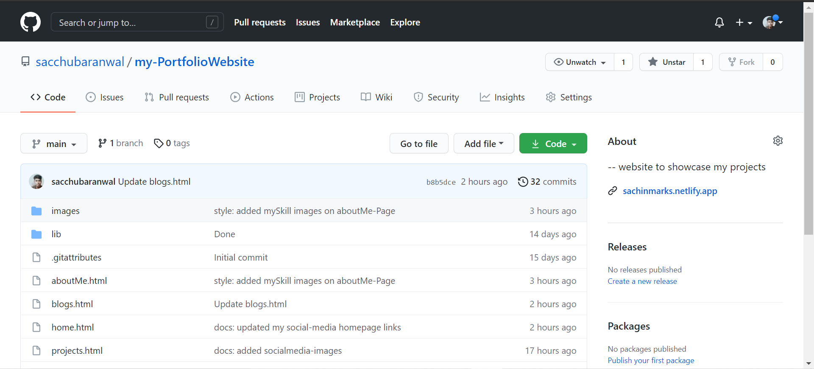

Why GitHubüíªis so important for developers..?

For most people, GitHub is like History. You know the name but you don’t know anything else. GitHub is a buzz word among the tech community and everyone must have heard it in their life from somewhere. GitHub is as important today as Git. If you know Git, you must now GitHub since you need a platform to share your code with other developers. This blog will highlight the importance of GitHub in the tech community and around the world. Once read, you would be enlightened by the importance of GitHub. To mention the main core of the post, we would be discussing:
Quite often people get confused between Git and GitHub. Some people also use these terms interchangeably. For a person who has just heard of these two terms, he always seems to find them identical. A lot of details can be found on the 'Difference between Git and GitHub' on web. Briefing a little bit would not harm anyway.
So, expanding the same concept, Git is a version control system. Git lets you create repositories and push local changes. It lets you host these repositories to the cloud so that it can be shared publically and privately with anyone.
It birth was much needed since so many people were using Git for their project development. Apart from sharing, contributions to the projects was also a major idea to revolutionalize how projects were developed. Such a platform would bring together the minds from all over the world and contribute to one single thing and make it better, maybe best.
Hence, GitHub born in 2008 as a repository hosting service. Now since there is nothing more accessible and feasible platform than a web-based one, GitHub was made as a web-based Git repository hosting service.

You can think about it as a Hub for Git. A hub contains a lot of data about something, in this case, it is Git. GitHub allows the freedom to let people contribute to the project they are working on. This will obviously decrease the completion time and increase the overall efficiency of the project.
For this, you need not pay for anything. It provides free services for the millions of open source repositories (28 million till March 2019). But, not all the projects are open source and require everybody’s interference. Some projects are private and even though they are developed by the same company or team, this team can be distributed around the globe. For example, one team is in India while others working from the United States. It also provides paid service for private repositories and currently, the count goes up to 72 million private repositories. No wonder this feature is used extensively by the people.
GitHub is a centralized platform. Centralized for developers all around the globe. A person can just host the repository created in Git to the whole world. Using this, it increases the chances of better project development and in less time. GitHub provides you with the easiness of combining the changes and removes the headache of sharing the large code files. If GitHub is not there, you will face a series of challenges in order to work together as a team.
First of all, the code needs to be shared among your teammates. A code file on a big project is heavy and will take a lot of resources. After the upload, when your teammates will make the changes to the file, they still have to upload the complete file each and every time. This problem is not present when you use GitHub. Just make the changes and push only the changes to the main code file. It will be fast and easy. As a project owner, you can track these changes quite easily on it.
GitHub provides a very clear and easy way for the documentation of your project. Since documentation is necessary to transfer the idea and provide a base of your project, It provides a very easy way to do so. A ReadMe file with predefined syntax will contain the documentation to understand the concept of the project.
GitHub is a platform used for hosting the repositories on which we work through Git. A GitHub repository will contain different tabs to navigate through such as Issues, Insights, Settings etc. To give you a clear look, see the below image.
This is a sample Git Repository being hosted on GitHub. We will talk about this in the GitHub repository tutorial. Apart from the tabs located, do notice the Readme.md file in the repository about which we talked in the previous section. This repository is local in terms of Git but global when hosted on GitHub.
Covering the major points of GitHub, we cannot forget the integration part. In GitHub, you get excellent integrations options. Options that are required for your project are all present. GitHub provides integrations with major platforms such as Amazon, Google Cloud, Jira, and Slack. For all this GitHub works as the central platform.
GitHub is not just repositories and code everywhere. It is much more than that. Connecting and contributing together on a project and developing it without ever meeting personally is amazing in its own ways. But, it does not only connect people who just want to contribute and develop something together. We can connect even if we are just interested in a project or a person’s contributions. Sounds exactly like other social networks?
Yes, it is quite similar and it is an amazing feature. In this, a user can follow other users and follow their activities. A user can even mark a certain project of a certain user as “favorite” and follow that project’s progress only. The followers and following count resemble that of Instagram. GitHub is a lot of fun even if used this way, just like other social networking sites. Hence, we can call this a Git social network.